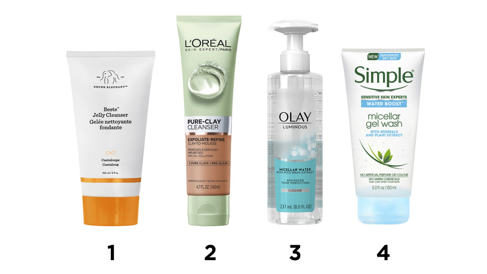

5 Best Testosterone Booster Supplements On The Market [2020]
 Skip to content Home Body Building Best Legal Steroids Best Test Boosters SARMS Best HGH Supplements Weight Loss Best HCG Drops Best Diet Pills Best Fat Burners Best Appetite Suppressants Sexual Health Best Penis Pumps Best Penis Extenders Male Enhancement Pills VigRX Plus ExtenZe Pills Best Pre Workout Best CBD Oil Best Appetite Suppressants Body Building Best Brain Supplements Toggle Navigation Toggle Navigation Home Body Building Best Legal Steroids Best Test Boosters SARMS Best HGH Supplements Weight Loss Best HCG Drops Best Diet Pills Best Fat Burners Best Appetite Suppressants Sexual Health Best Penis Pumps Best Penis Extenders Male Enhancement Pills VigRX Plus ExtenZe Pills Best Pre Workout Best CBD Oil Best Appetite Suppressants Body Building Best Brain SupplementsBest Testosterone Booster Supplement Reviews With Evidence-Based Ingredients [2020]
by admin August 31, 2020 September 30, 2020Best Testosterone Boosters
Testosterone booster is a supplement which is used to boost your testosterone levels naturally. These supplements are available in the form of pills. They are composed of potent and clinically tested ingredients, which usually consist of D-Aspartic Acid, Vitamin D, Tribulus Terrestris, Fenugreek and Zinc , among others.
These ingredients work together to stimulate the natural production of the testosterone hormone in your body. It’s worth noting that the natural production of testosterone is linked to a wide array of bodily functions, as has been evidenced by numerous studies conducted over the years. The increase in testosterone enables you to feel more energetic, strong and also improves your sex drive.
It’s a pretty well-known fact that testosterone is the male sex hormone responsible for the development of the features associated with manhood, such as muscle and bone mass, sex drive, reproductive organs, and body hair .
World’s best 5 testosterone boosters For Men on the marketHowever, something that is not so well recognized is the fact that our levels of testosterone decrease as we age. Consequently, all the bodily functions associated with this hormone also begin to deteriorate. This is where the test boosters come into play.
Here Are The 5 Best Testosterone Booster Pills And Supplements
Ranking Testosterone Booster Rating Buy Now #1 Testogen 10/10 Check Best Price #2 Testofuel 8.5/10 Check Best Price #3 Prime Male 8/10 Check Best Price #4 Testo Max 7/10 Check Best Price #5 Testo Tek 4/10 Check Best Price#1. Testogen World’s Best Testosterone Booster With NATURAL & POWERFUL Ingredients
Testogen Is A Unique, Natural, Powerful Testosterone Booster With 100% Pure Natural Ingredients. [100 DAYS Money Back Guarantee. No Questions Asked]
CLICK HERE TO BUYTip : Choose 3 months pack so you can save money and get 2 months free. Offer details : (3 MONTH’S SUPPLY + 2 MONTHS FREE)
Testogen is the superior testosterone supplement made by Wolfson Berg Limited. The product is widely known as “ Testosterone Triple Action ” courtesy of its 3 potent testosterone-boosting ingredients.
Testogen is one of the best supplements out there for naturally boosting the testosterone levels in your body. With this product, you can expect to:
Feel more energetic. See improvements in the quality of your sleep. Have strong and frequent erections. Burn unwanted fat deposits. Build lean muscle mass. Perform better in bed. Have a great recovery between intense workout sessions. Feel more confident and motivated.Such remarkable functionality and efficiency make Testogen the best testosterone booster on the market.
Ingredients
As mentioned, Testogen prides itself on a “Testosterone Triple Action” formula consisting of 3 prime testosterone-boosting ingredients.
These include D-Aspartic acid, Zinc, and Vitamin D (crucial components in all the best testosterone pills). As well as this trio, the product also contains fenugreek, B-Vitamins, selenium, Panax Ginseng, and Tribulus Terrestris. These contribute towards a rise in testosterone levels and also boost your sex drive.
How does the product work?
The success of Testogen is entirely down to the ingredients included in the testosterone pills. These ingredients work together to create an advanced and potent formula that effectively triggers the natural release of testosterone in the body.
Dosage
A single serving of Testogen consists of 4 capsules . Men should ideally take 1 serving per day before breakfast.
Side effects
There are no side effects associated with the use of Testogen.
Why is Testogen No.1?
Testogen occupies the number 1 position in our list. It is named as the “best testosterone booster in 2019”. This amazing supplement has carved a worthy niche for itself and is highly recommended by doctors, medical professionals, athletes, and bodybuilders alike. As such, it has earned its spot as the best test booster on the market . Its huge fan base can be attributed to a number of reasons:
Firstly, the label on the bottle is very clear and shows all of the ingredients as they are. Secondly, it boasts some of the most potent ingredients that effectively boost testosterone levels in men. All of the ingredients in the product are scientifically tested. The product is available in 3 different sizes, which equate to 30, 90 and 150 days of usage. The product is constantly upgraded by its manufacturers to meet the latest scientific trends. It keeps fatigue at bay. Your cognitive functions are significantly improved. It does not contain any harmful additives or preservatives. It is pretty affordable. Your performance in bed is improved. It helps in lean muscle growth and the reduction of fat. The usage of this product contributes to overall good health.Read our full review of Testogen here .
Testogen: Purchase, Prices and Offers
A single bottle of Testogen contains 120 capsules and this is intended to be a 1-month supply .
Buy Testogen At Best Price#2. TestoFuel The Finest Test Booster Overall
Click here to get the full ingredients listTestoFuel is an immensely popular natural testosterone supplement booster among gym-goers , bodybuilders and fitness freaks. It comprises of high-end ingredients that increase your testosterone levels in a jiffy.
What’s more, it contributes to great strength and muscle growth, as well as regulating dihydrotestosterone (DHT) . The presence of this compound also helps in preventing hair loss and baldness in men.
In addition, TestoFuel aids the production of the growth hormone.
It’s also worth noting that this testosterone booster traditionally contains large doses of ingredients, but it does so in the right amounts. You can always bank on receiving a high-quality product in what is deemed to be one of the best male testosterone pills available.
Ingredients
Its ingredients list is the most attractive feature of TestoFuel. As mentioned, it contains large doses of the best ingredients, and you can always rely on an upgraded formula that adheres to modern scientific standards. The main ingredients include D-Aspartic acid (lots of it!), oyster extract (which contains large concentrations of zinc), ZMA (a combo of zinc, magnesium and Vitamin B6) and other potent ingredients such as fenugreek, Vitamin D and K, and Panax Ginseng.
How does the product work?
TestoFuel contains large doses of potent ingredients, but there’s no reason to worry about any side effects or risk of overdose. Its impressive high content of D-Aspartic acid (a whopping 2.3gms) not only boosts the testosterone levels in your body, it also tackles testosterone deficiency in general . The other ingredients, including zinc, magnesium and Vitamins D and K, aptly support the functionality of the D-Aspartic acid. Finally, Ginseng contributes towards muscle growth and increased sex drive.
Dosage
You should ideally take 4 capsules per day along with food.
Side effects
TestoFuel has a clean formulation that is not accompanied by any side effects.
Why should you buy this product?
TestoFuel truly is the alpha male’s best friend. Here’s why:
At 2.3gms, TestoFuel contains THE highest concentration of the testosterone-boosting ingredient D-Aspartic acid. It improves your cognitive functions. The packaging gives you a clear overview of the ingredients inside, as well as their concentrations. There are no side effects to this product, so it’s completely safe to use. It contributes towards muscle growth. It boosts your libido and stamina. As a result, you tend to perform better in bed. The product contains optimum dosages of the ingredients, in all the right concentrations.TestoFuel: Purchase, Prices, and Offers
A bottle of TestoFuel contains 120 capsules , which is intended to be a 1-month supply .
Buy TestoFuel At Best Price#3. Prime Male Best Testosterone Supplement for stamina and building muscle
Click here to claim Buy2 Get1 Free (LIMITED TIME OFFER)Finally, sitting in the fourth position, we present another of the best testosterone boosters on the market: Prime Male . As well as containing everything that a good testosterone supplement should, it also manages to naturally increase the testosterone levels in your body with ruthless efficiency.
It offers other benefits too, including boosting libido, energy levels, and muscle growth, and enhancing cognitive abilities and mood. Furthermore, it helps to maintain your blood pressure and blood sugar levels.
As a result, it rounds up to be a very versatile product that continues to leave a great impression on its users.
Ingredients
Prime Male makes use of 12 fantastic ingredients, each of which is super effective in improving your body’s natural testosterone levels. As you can see, some of the ingredients are pretty obvious by now: D-Aspartic acid, Zinc, Vitamins B6, K3 and D2, Magnesium, Boron and Nettle root extract. But the most unique ingredient in Prime Male is Luteolin (blocks dihydrotestosterone, DHT), Korean Ginseng (gives great erections) and BioPerine (assists in the absorption of the other ingredients). The 100% natural ingredients in Prime Male make it an ideal choice.
How does the product work?
Prime Male is seriously a good test booster and this is largely because of the supreme quality of the product. It makes use of its unique set of ingredients to improve the functionality of the composition as a whole. Moreover, BioPerine is the MVP of this product; it effectively helps in the absorption of all the other ingredients, thereby ensuring that you receive nothing short of the best with Prime Male.
To put things into perspective, BioPerine multiplies the effectiveness of the main ingredient, D-Aspartic acid, by almost 10! This means that Prime Male is a winner when it comes to utilizing this potent testosterone-boosting ingredient, and there are countless positive reviews to back this up.
Dosage
You should ideally take 4 capsules per day along with food.
Side effects
There are no side effects associated with using Prime Male.
Why should you buy this product?
Here are a few reasons why you need to get your hands on this product:
It contains the most potent set of testosterone-boosting ingredients of any product. Boosts your testosterone levels more efficiently than any of its peers. It has high-quality natural ingredients. It effectively builds lean muscle mass and makes you stronger. It greatly enhances your libido. It helps you to shed belly fat. It regulates your blood sugar levels. The pills keep you energetic throughout the day, reducing fatigue. It improves your mood and makes you feel more confident. Cognitive functions are improved. It also contributes to good mental health. It controls your blood pressure and helps in maintaining good cardiovascular health.Prime Male: Purchase, Prices, and Offers
A bottle of Prime Male contains 120 capsules and this is meant to be a 1-month supply .
Buy Prime Male At Best PriceRead our full review of Prime Male here .
#4. TestRx Claimed As The Top Testosterone Booster For Natural Ingredients
Click here to claim 20% OFF On TestRXTestRx is an effective testosterone booster from a Tennessee-based company known as Leading Edge Health. This product adopts a rather simplistic approach towards increasing your body’s testosterone levels, using natural ingredients which essentially include herbs, vitamins, and minerals. The 100% natural formulation comes with herbal ingredients in the right doses, and so it is very popular among people who are trying out testosterone boosters for the first time in order to embrace their inner alpha male.
In a nutshell, this is a very fine product in its own right and is pretty good for muscle growth and weight lifting.
Ingredients
The list of natural ingredients comprising TestRx include the very popular duo, D-Aspartic acid and fenugreek seed extract, along with the equally impressive components of zinc, magnesium and Vitamins B6, D3 and K2.
How does the product work?
The ingredients in TestRx boost the testosterone levels in your body, automatically contributing to an increased rate of protein synthesis. It is a well-established fact that the synthesis of protein results in the growth of muscle mass, while also curbing the effects of the hormone cortisol (known to cause the breakdown of muscle tissue).
The increased testosterone encourages protein synthesis by attaching to the androgen receptors in the muscle cells. This protein works wonders for repairing the micro-tears that appear within your muscles when you lift weights. Consequently, this contributes to the build of muscle.
If this wasn’t enough, it also increases the flow of oxygenated blood into the muscles, helping you to regain stamina during physical activities, such as sexual intercourse or weight lifting.
Dosage
You should ideally take 2 capsules every day, one in the morning and one in the evening.
Side effects
The product may give you minor side effects, which include bloating, gas, stomach upset, diarrhoea, etc. However, they are rare and do not persist.
Why should you buy this product?
TestRx is a pretty good testosterone booster and it has garnered a neat reputation for itself for the following reasons:
The ingredients are clinically proven to successfully boost testosterone levels. It promotes good sleep, allowing you to wake up happier. Improves your libido and stamina and as such, your performance in bed improves. It improves recovery time between workout sessions. You feel energetic throughout the day. Results are quick to see.Read our full review of TestRx here .
TestRx: Purchase, Prices, and Offers
A bottle of TestRx contains 60 capsules and this is meant to be a 1-month supply .
Buy TestRx At Best Price#5. Testo-Max Premier T Booster
Testo-Max is one of the premier testosterone supplement and is the brainchild of the famed CrazyBulk Company .
This incredible product has been named one of the best testosterone boosters time and time again. It has been around for more than a decade and a half and for this reason, it has maintained a long-standing legacy of being a quality product.
Testo-Max serves as a safe and legal alternative to the steroid Sustanon, without the risk of any undesirable side effects. Just like Testogen, the USP of this product is its set of ingredients, which effectively increase the levels of testosterone in your body. Along with Testogen, Testo-Max takes the cake for being among some of the best testosterone supplements for men.
Ingredients
Testo-Max contains some of the best ingredients that will increase your body’s testosterone levels in a naturally progressive manner. The main ingredients in this product are D-Aspartic acid, fenugreek extract, Vitamin D3, ginseng, nettle leaf extract, and zinc.
How does the product work?
The effectiveness of Testo-Max is primarily a result of its main ingredient, D-Aspartic acid, which increases the production of the luteinizing hormone. This subsequently produces an increase in testosterone levels, directly leading to gains in muscle, sex drive, stamina and strength.
Dosage
You should ideally take 4 capsules per day, about 20 minutes before your breakfast.
Side effects
There are no side effects associated with the use of Testo-Max.
Why should you buy this product?
Testo-Max takes second place as one of the most popular and sought-after testosterone boosters on the market today. The fact that it is sold by one of the leading healthcare supplement companies, CrazyBulk, makes it a top choice. Apart from this, here are the reasons why it is a top-grade product:
This testosterone booster contains one of the highest amounts of D-Aspartic acid. Testo-Max serves as a safe alternative to the anabolic steroid Sustanon. It is one of the best testosterone-boosting supplements to naturally increase levels of testosterone in your body. There are no side effects. It helps to improve your mood and keep you motivated. For the price you pay, you get a very good quality product. The use of these testosterone pills noticeably improves your sex drive. Your stamina levels increase significantly.Read our full review of Testo-Max here .
Testo-Max: Purchase, Prices and Offers
A bottle of Testo-Max contains 90 capsules and this is meant to be a 15-day supply .
Buy Testo Max At Best PriceTable of Contents
Best Testosterone Boosters Here Are The 5 Best Testosterone Booster Pills And Supplements #1. Testogen World’s Best Testosterone Booster With NATURAL & POWERFUL Ingredients #2. TestoFuel The Finest Test Booster Overall #3. Prime Male Best Testosterone Supplement for stamina and building muscle #4. TestRx Claimed As The Top Testosterone Booster For Natural Ingredients #5. Testo-Max Premier T Booster Evidence Based Testosterone Boosting Ingredients D- Aspartic Acid (DAA) Zinc Magnesium Korean Red Ginseng Fenugreek Extract Boron Several vitamins Beginners Guide to Testosterone Boosters: Advantages of high testosterone levels Foods that help to boost testosterone How important are testosterone boosters? Reasons for a drop in testosterone levels in the body: Signs and symptoms of low testosterone: Scientific Research FAQs On Testosterone ConclusionEvidence Based Testosterone Boosting Ingredients
There are certain ingredients which are natural testosterone boosters. These ingredients are 100% organic and have been scientifically proven to be powerful and effective enough to enhance the production of testosterone in the body. As a rule of thumb, a genuine testosterone booster should definitely have these types of ingredients in their composition, which are as follows:
D- Aspartic Acid (DAA)
D-Aspartic Acid is a powerful amino acid that is widely recognized as the strongest ingredient to boost testosterone levels. Naturally, then, any good testosterone-boosting supplement usually contains DAA in the highest concentration out of all its other ingredients. This amino acid works directly on the testes to encourage the synthesis of the testosterone hormone. Several experimental trials have studied the efficiency of DAA as a test booster and have reported an increase in male testosterone levels of anywhere between 20% to 60%. Furthermore, it also improves sperm count and the volume of semen ejaculated. All of this undoubtedly makes DAA a compulsory addition to any t-boosting pill.
Zinc
Zinc is renowned for being one of the best aphrodisiacs available . Basically, anything containing high concentrations of zinc is surely going to increase your sex drive and sexual stamina. Again, it is one of the best testosterone-boosting ingredients out there thanks to its amazing effectiveness at improving the amount of testosterone in the body. Zinc is one of the most easily available trace minerals in the body, but it is also an essential nutrient. With this in mind, the t-boosting benefits of zinc should be obtained from food sources or supplements. Fortunately, the ingredients used in the best t-boosters contain a generous dosage of zinc – more than enough to reap all of the health benefits that it has to offer.
Magnesium
After zinc, magnesium is one of the most available minerals inside your body. In testosterone boosters, it promotes the functionality of both D-Aspartic acid and zinc. However, studies have also demonstrated magnesium’s own ability to improve the production of testosterone. Since magnesium is linked to literally hundreds of biochemical reactions, it is clear to see why the presence of magnesium acts as a catalyst in the production of testosterone. On a deeper level, the chemical reactions responsible for the creation of testosterone within the testes are biologically triggered with magnesium ions.
Korean Red Ginseng
Korean Red Ginseng, or Panax Ginseng, is a powerful herb-based ingredient that was used in ancient Asian medicine to boost testosterone. Its antioxidative properties help to prevent oxidative stress to the reproductive organs and lead to a better inflow to the penis. This also facilitates the flow of testosterone and gives a huge boost to various sexual functions.
Fenugreek Extract
Fenugreek is popular for being one of the best testosterone-boosting herbal ingredients. Several studies have shown the potency of this herb in effectively improving testosterone levels. It contributes towards a proper balance in the testosterone-estrogen ratio and enhances sex drive, stamina, and performance in bed.
Boron
Boron is a mineral that is still undergoing research to explore its potential health benefits. We know for sure that this ingredient helps in the metabolism of calcium in the bones, as well as improving brain functions, but how does it support the synthesis of testosterone? Well, its metabolism-increasing characteristics help to eliminate clogged blood vessels, which aids in a better flow of testosterone throughout the body. So, although it does not contribute directly towards boosting test levels, it does help testosterone do its job.
Several vitamins
Vitamins B6 , D3 and K2 are some of the most useful macronutrients when it comes to general nutrition. These vitamins come with a wide variety of health benefits that make them a compulsory addition to many health supplements. Their advantages extend to many different areas, including improvement in testosterone levels.
Beginners Guide to Testosterone Boosters:
Advantages of high testosterone levels
What are the benefits of having high testosterone levels?
You get to experience a high sex drive and naturally, you experience a happier, healthier sex life. There’s a more rapid loss of fat in your body and as a result, you’re able to lose weight. Testosterone aids muscle mass, so having high t levels gives you increased lean muscle gains. You feel more confident about yourself it boosts your self-esteem. Your erections are harder and last longer. Ultimately, high testosterone translates to great overall health and wellness.Foods that help to boost testosterone
There are many foods that naturally boost the testosterone levels in your body. These include:
Fatty fish Egg yolk Beef Oyster Shellfish BeansHow important are testosterone boosters?
While a balanced diet, proper exercise, good sleeping habits and stress management help you to maintain high testosterone levels, testosterone boosters help you to achieve your goals faster and more effectively. The consumption of natural testosterone pills provides you with a wide range of benefits, such as increased muscle mass, rapid fat loss, better sex life, boosted self-confidence, as well as good health in general . From this, it’s pretty understandable why taking testosterone boosters is almost a compulsion for any man! But are all of them good for you? Unfortunately, the answer is no. You’re bound to find scores of testosterone boosters on the market, but only a few of them actually serve their purpose. What are those select few? This question was the motivation behind this article and the reason why we’ve listed the best-reviewed products available today.
Some intensive research has shown that only around 1/5th of companies deliver quality testosterone-boosting supplements. The others? They’re duping their customers with sub-par stuff.
Reasons for a drop in testosterone levels in the body:
The need for taking testosterone boosters arises when the decrease in levels of the hormone becomes more apparent. We understand and appreciate every man who wants to take a step towards seizing control of his life.
It’s natural to question why the drop in hormone levels occurs. Based on our research, here are some of the causes:
An injury to the testes that initially went unnoticed. Testes are delicate organs that require protection and care at all times. An injury can damage the organ, hindering its normal way of functioning. Testicular cancer can also affect the way your organ normally works. Cell mutation and tumor growth can interrupt or permanently damage the organ’s ability to function. Type-2 Diabetes is often responsible for low testosterone levels. HIV/AIDS can slowly disrupt the testes’ performance of routine processes.Signs and symptoms of low testosterone:
There’s usually a pattern that can be recognized and used to detect a drop in hormone levels.
These signs and symptoms are:
Loss of interest in sex. As testosterone plays a vital role in male excitation, its absence can cause disinterest. Problems with erections become more frequent. You slowly start noticing that it’s difficult to get an erection. There is a significant decrease in semen quantity. You no longer feel energized enough to go about your day, something that may never have happened before. There is a loss of muscle mass, and fat depositions are slowly starting to take over. A decrease in the size of testicles is observed. This usually happens because the t hormone is responsible for maintaining the testicles’ health. Mood swings occur and you cannot figure out what is triggering them. At times, you may not even realize they are happening.Scientific Research
Several pieces of research have concluded that the presence of zinc in the body plays a role in the secretion of testosterone. There has also been evidence that zinc can help in promoting protein synthesis. The synthesis of protein leads to the production of ATP. This triggers the release of enormous energy bursts within an individual, leading to a more successful workout.
It’s also been observed that when an exhausted athlete (or even an individual) is given zinc as a supplement, they report feeling less drained and are able to carry out the physically and mentally demanding tasks ahead. Zinc supplementation prevents a drop in t-hormone levels and keeps the body working. Consequently, the maintained levels of testosterone help in making recovery quick and effective.
Magnesium is an element that is crucial for the normal running of many bodily functions. This element is responsible for causing nearly 300 reactions that take place in the body. Needless to say, magnesium is a dream when it comes to promoting testosterone secretion in the body.
A study showed that magnesium causes an increase in testosterone secretion. This leads to the availability of free and functionally present testosterone in the body to be readily used whenever needed. The study involved testing men on both sedentary and athletic grounds, in order to see how well the body was able to function with an abundance of magnesium.
Amino acids are vital for the daily running of the body and they play a crucial role in all bodily functions. D-Aspartic Acid is a chemical compound that helps in the secretion of testosterone, allowing it to be utilized later whenever it is needed by the body.
Research has also found that men with lower levels of testosterone can benefit from taking Aspartic Acid, while men with optimum to high levels of the t-hormone may not experience the same rush. The presence of this acid in the body is sure to help in one way or another. In fact, Aspartic Acid can positively impact fertility in both men and women. In males, it promotes the secretion of more semen and also increases the sperm count, while in women, it helps to activate the function-ability of folic acid which is key for the production of eggs.
FAQs On Testosterone
How do I increase testosterone naturally?The best ways to naturally boost your testosterone levels include getting proper sleep, ensuring a healthy diet comprising of protein, carbs, and healthy fats, soaking up some sun (Vitamin D), doing exercise, weight lifting and making use of testosterone-boosting supplements like the ones listed in this article.
What are the side effects of a testosterone booster?Testosterone boosters use natural and clinically tested ingredients to boost the testosterone levels in your body and therefore, there are rarely any reports of side effects.
Which is the best testosterone booster for muscle gain in 2020?Testo-Max is the best natural testosterone booster for muscle gain in 2020. The Status testosterone booster is also a top-rated contender in this category.
Is it wise to purchase free testosterone boosters on offer?Absolutely! A t-booster not only improves your testosterone levels, but it also contributes towards good overall health. Since these test boosters are the best in the market, you should definitely be getting some free ones to try for yourself, while you still can.
Are testosterone pills legal?Yes, the 100% natural composition of these pills makes them legal for consumption.
Are the ingredients used in t-boosters FDA approved?Yes. The best t-boosters use top-rated ingredients that have been clinically tested and approved for use by the FDA.
Which is the best testosterone booster for females?Women can take low testosterone supplements, such as Testosterone Booster 785.
What are some foods that help to increase testosterone levels in the body?Foods that contribute to increased t levels include tuna, egg yolk, oyster, beef and beans.
Which is the best testosterone booster for sex?Testogen, Testo-Max, and TestoFuel are the best testosterone boosters for improving both your sex drive and your performance in bed.
Which is the best testosterone booster for men over 50 years of age? Testo-Max is a very good testosterone booster for men over the age of 50.
Apart from boosting testosterone levels, Testogen is also an excellent product for muscle gain.
Do testosterone booster pills contain herbs?The best herbs that are used in testosterone boosters are Tribulus Terrestris (great for treating erectile dysfunction), fenugreek (excellent for fat loss) and ashwagandha (great for sperm quality and stress management). Indeed, these herbs are crucial in making test boosters work to their fullest.
Where can I buy testosterone-boosting supplements? Is it okay to buy an over-the-counter testosterone booster?Over-the-counter testosterone boosters may not be reliable and therefore, you should purchase yours from an official website.
What is the best testosterone booster on the market?Testogen. Ranking and rating based on customer reviews, testimonials, re order rate, and amazon ratings.
Conclusion
Testosterone is a vital hormone without it, the human body would enter an untreatable state of constant erratic behavior. Issues relating to a decline in t levels increase with age because the body’s natural ability to produce the hormone often decreases drastically.
Taking testosterone boosters offers a safe and efficient way to increase the testosterone levels in your body. This article has covered everything you need to know about testosterone boosters from all perspectives. With this said, please choose the supplement that best satisfies your own needs!
Neve | Powered by WordPress